The AI Guide
Table of content:
AI 101: (introduction to AI)
AI 102: (conditions)
AI 103: (actions)
AI 104: (manual override)
AI 201: (room classification)
AI 202: (room assist)
AI 203: (weapon targeting)
AI 301: (introduction to crew)
AI 302: (tasks & abilities)
AI 303: (repair & seniority)
AI 304: (boarding)
AI 401: (power management)
AI 501: (advanced tactics)
AI 502: (behind the scenes)
Gym & Academy
Acknoledgments
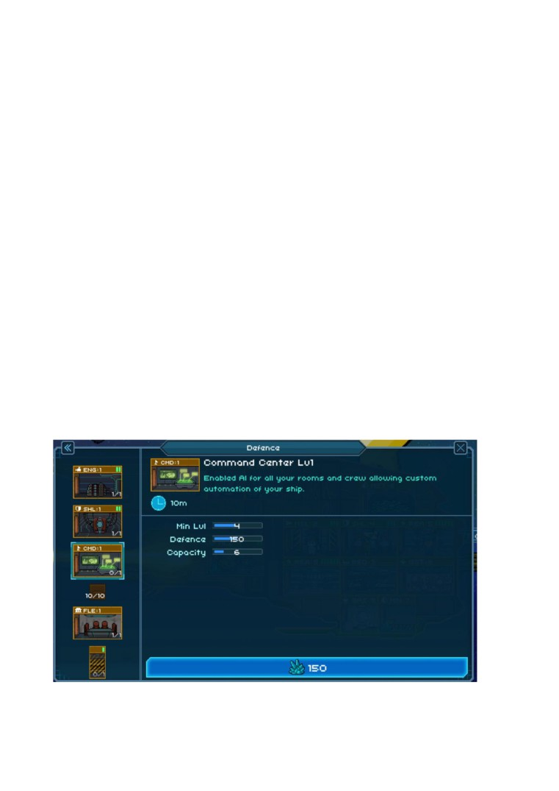
AI 101: (introduction to AI)
[NOTE: If you have basic understanding of how ai works and are looking for practical applications
of it, please skip ahead to AI 201]
Hi, team.
AI is, in my opinion, what really makes this game fun. But, it takes some getting used to. Let's start
with the basics:
When you start the game, your system rooms will come with some pre-loaded ai commands.
Engines will already know to ask for power, for example. These can be manually overridden, but
basically you need to know that nothing works on its own without ai.
A system (targetable room) may be unable to complete its command (an engine might not receive
power if there isn't enough to supply), but trust that the commands are there. You just can't access
them yet.
Manually overriding the ai commands is what the controls are for at the bottom of your screen
during a battle. By aiming the laser by hand at a room, you are telling the room to disregard its ai
set and it will not revert back to any ai for the rest of the match. You can manually adjust power to
the rooms as well.
Crew, on the other hand, do not come with any pre-loaded ai. Although they do apply their stat
bonus to the room in which they're standing, they will do nothing unless manually directed to during
a match.
At level 4, you gain access to the Command Room. It's in the 'Defence' folder in the shop, and it
costs 150 minerals.
Once you buy this and place it on your ship, you'll be able to access and edit the ai commands for
system rooms and crew. Note the ‘capacity’ at each level as it directly correlates to how many lines
of code you can have per room/crew. This is subject to change.
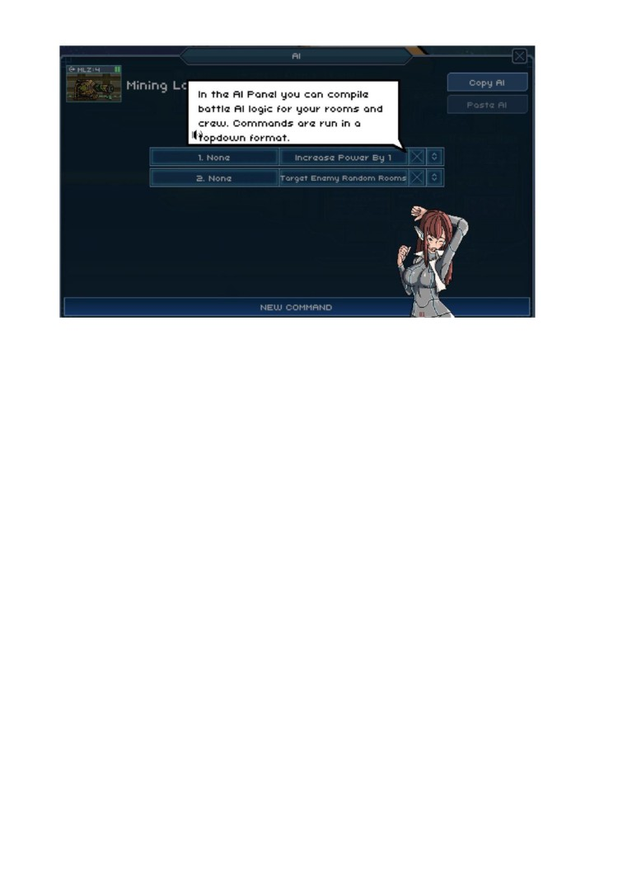
Tutorial Girl will come back to say hi with a bit of confusing information, which you'll probably skip
right through. But, those lines of ai code are what have been powering and targeting your laser all
along.
You'll find that they are not efficient enough to win battles on their own and I recommend editing
them... but let's not get ahead of ourselves.
Time to move on to AI 102.
[One important note before you go, the CMD room must be on board in order to edit the ai of crew
and rooms. However, you do NOT need to keep it on board for the ai to work.]
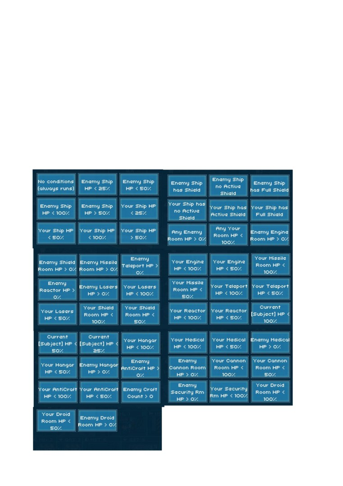
AI 102: (conditions)
Editing the ai on rooms and crew can be intimidating. You don’t want to ‘break’ anything that
works, but you do want to optimize its potential. It’s important to understand how everything works
before you adjust anything.
It all boils down to a string of ‘condition/action’ lines. If it helps, you can think of them as ‘if/then’
statements.
Conditions are the ‘if’ part. This means that when the condition is true, the ai will execute (do) the
corresponding action. When there are multiple lines of code, they will be processed in order of
priority from top down.
Before we look at examples of what they can do, here are the options initially available to us in an
msl room with a level 1 unresearched cmd room.
There are so many! But don’t be intimidated. They’re all just situations. Whichever you select, your
saying, “if the situation is this…”
[Note- The PSS AI platform has different categories of conditions. They are: room hp, subject
(crew) hp, and room status (contents). They can, however, conflict with each other across all types.
]
●
First, let’s apply the game’s ai concept to real life circumstances. If you’re brand new to the
game it might help you understand the system. Here’s a fake example:
●
Tired: sit in chair
●
In this fake example, it tells us that if we are tired, we sit in a chair. It does not tell us what
to do with our legs if we are not tired. It also doesn’t tell us what to do if there are no chairs.
Let’s add another line.
●
Tired: sit in chair
●
None: walk
●
Now, when you are tired, you sit down and in all other situations (with no conditions) you
walk. We could find other situations where sitting in a chair would be useful OR other
places to sit and we could add more lines, but they must come above our none:walk line.
●
If we do it the other way around:
●
None:walk
●
Tired: sit in chair
●
We would never sit down. We would always walk because the line of higher priority is the
none:walk line. That means no conditions make us want to do anything other than ‘walk’
Now, Let’s look at a basic in-game example of msl room ai:
(expressed as “condition:action”)
None:Set max power
None:Set cheapest
None:Target enemy random rooms
All 3 lines have ‘none’ as the condition. This should not be read as never. It means no conditions
make the line untrue. The room will always call for max power, it will always set the cheapest
ammo, and it will always target random rooms.
In this example, you can see that power setting, ammo selection and target acquisition operate
independently and concurrently. Things get more interesting when you add more of either of these
types of commands.
Let’s add another targeting line:
None:Set max power
None:Set cheapest
None:Target enemy missiles
None:Target enemy random rooms
Now, the same things will happen except it will prioritize the enemy missile rooms as a target.
Instantly, the room will set max available power, load the cheapest available ammo and target an
enemy missile room (if present). If no enemy missile room is present, your ai will progress to line 4
and select a target based on the ‘Target enemy random’ action.
Remember, the ai sets priority. This means that it will first choose a missile room. If that room is
destroyed, it selects the next target allowed by your ai set.
So, if the enemy has a second missile room, it will start shooting there.
If both missile rooms are destroyed, it will move on to line 4 and begin targeting random rooms.
However, if a missile room is repaired, it will return to that target because Line 3 takes precedence
over line 4.
Let’s now change the situations:
None:Set max power
None:Set cheapest
Your ship <100:Target enemy missiles
None:Target enemy random rooms
At the beginning of a fight, your ai still sets max available power to the room. It still selects the
cheapest available ammo.
But, it skips Line 3 (because you have full health) and picks it’s first target from line 4 of your code.
Once your hull takes damage, it will prioritize enemy missile rooms.
Unfortunately, if the enemy missile rooms are both completely destroyed (or not present in the first
place), it will continue on to line 4 and start targeting random enemy rooms again.
This is explained in further detail in the next section (AI 103: conditions)
For more information on power controls, see the AI 400 series.
For more information on target acquisition and ammo selection, see the AI 200 series
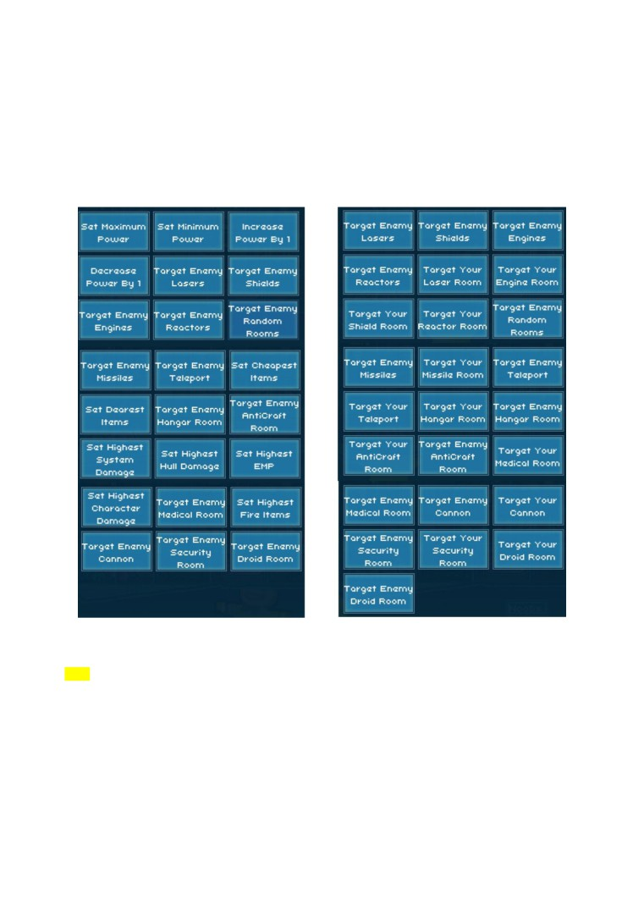
AI 103: (actions)
Actions can be interpreted as ‘then’ responses.
Use the conditions to tell your subject (room/crew) the situation and the actions to tell your subject
how to behave.
Let’s have a look at our very first available options. I’ve separated them into two categories:
Missile room actions
Crew actions
[Again, for strategy about how to best use these, please skip ahead to AI 201]
[Note- The PSS AI platform has different categories of actions. They are: power, ammo select,
target select, and ability. They operate independently and in any order. This means they can only
conflict with commands of the same category. ]
Before we look at real examples, let’s return one last time to our fake real life circumstance.
● Tired: sit in chair
● None: walk
This command set uses only two commands of the same category (legs). Let’s add another
command with a different category (arms):
● Tired: sit in chair
● None: walk
● Tired: hands in pockets
● None: swing arms
In this example, legs resolve their action by looking at the conditions. Arms resolve their action the
same way. The important bit is that they can do this at the same time (leg actions do not affect arm
actions)
Now let’s look at a real game example:
To quickly understand the missile room actions, let’s look at the first msl room example from our
last lesson.
None:Set max power
None:Set cheapest
None:Target enemy random rooms
As you can see, the targeting commands all begin with the word ‘target.’
HOWEVER, this should be read as retarget, as once an enemy room is destroyed, ai will choose
the next valid target.
In our example above, our msl room will immediately select a random enemy room to target. It will
keep shooting there until that room is destroyed. Once that happens, it will retarget another
random enemy room.
It will continue on like this until all rooms of the specified type (here, ‘random’ so any) are
destroyed. At that point it will continue to shoot at the last available target it chose even though it is
already destroyed.
The problem with this behavior is that destroying rooms is NOT what wins a match. We need to do
hull damage.
Hull damage occurs when we shoot an enemy room which has already been destroyed OR directly
from Penetrator missiles.
So, let’s see what happens when we change the action in our previous example:
None:Set max power
None:Set cheapest
None:Target enemy lasers
Power up, set ammo and shoot at enemy lasers. Once the first laser is destroyed, our ai will
retarget the next, if there is one. But, once all the lasers are destroyed, we will keep shooting at
that last laser room, scoring hull damage.
That still takes some time though. Maybe try a single room type?
None:Set max power
None:Set cheapest
None:Target enemy shield
Power up, set ammo and shoot at enemy shield. Because there is no other action, our room will
always shoot at the enemy shield, whether it has hp or not.
When it does not, we score hull damage.
A word of warning though. If the enemy has no shield room and this is your only targeting
command, your missile will not fire at all.
Try not to worry. There are plenty of advanced lessons to come.
It’s mostly important that you know how things work, and I hope this helps.
Some brief notes about crew actions:
1. The condition sets the situation, just like it does for our room ai.
2. Target commands tell the crew where to go.
3. The crew automatically knows what to do when it arrives in a room. There are 4 possibilities
when the crew is in a friendly room:
a) fight a present enemy
b) extinguish fire
c) repair damage
d) assist the room
4. AND THEY HAPPEN IN THAT ORDER. There are two possibilities when the crew is in an
enemy room: fight a present enemy, dismantle the room. (*later you will learn about special
abilities. For now, just understand that they happen independently from this crew action
cycle)
5. The game presents 40 frames per second, so an action cycle occurs every 40 frames. You
can take note of the flashing drill/gun in the crew’s hand.
6. The crew can only go where there is a clear path for him to navigate. Therefore, don’t
expect him to go repair a room you’ve moved to an inaccessible place on your ship.
7. Repairing the damaged room requires the ‘target condition room’ action.
Here are some examples:
Your reactor <100:Target your reactor
If this is what you have, and a reactor takes some damage, the crew will walk to the nearest
reactor, not necessarily the one that needs attention.
Instead, use this:
Your reactor <100:Target condition room
Now, the damaged reactor is the one named in the condition itself and your crew will walk there to
repair it.
For more info on repair ai, see AI 303
For more info on boarder ai, see AI 304
For more info on room assisting, see AI 202
AI 104: (manual override)
The AI codes you set will work as they should until you tell them otherwise. Everything can be run
manually on the ship as well, so let’s look at how to do each action manually, AND the
consequences of doing so.
Power:
Power can be adjusted to any room by sliding up or down on the little blue (orange for android) bar
to the right of the appropriate control icon. This can be done at any time during the match except
when a room is emp’d. When the room is suffering the effects of an emp, the power is trapped
there and cannot be reduced or added to.
One consequence of manually adjusting power is that all power commands to all rooms are forever
after affected.
Under normal ai operation, if a room is damaged it loses power corresponding to the amount of hp
loss. When it is repaired, the power returns automatically as long as there’s still some available.
However, once you manually adjust any power level, this no longer proves true. It will be repaired
but power will not automatically be restored. It too needs manual attention.
Selecting ammo:
For weapon rooms that require an ammo choice (msl, hangar, ion, droid) the type can be manually
selected by tapping the ammo icon beside the target reticle.
A minor inconvenience occurs when you do this manually, as it resets the existing charge of the
room. (If you use ai to switch ammo, it does not reset the charge)
Targeting weapons:
Lasers, missiles, cannons and drones can be manually targeted by dragging the appropriate target
reticle to the desired enemy room.
No major negative consequences follow here. They just shoot where you tell them to. If you move
only one, the others will not be affected.
Crew movement:
Crew can be manually sent to any room destination on either ship. Simply tap/hold the crew and
drag it to the desired location. If you have a teleport and want it to transfer ships, drag the path to
the arrow, hold through the space and drop in the other ship.
Once you tell a crew to do anything manually, all other ai commands of that specific crew are
overridden. This is dangerous because he can no longer dodge/repair or use his ability without you
telling him to.
Crew ability:
You can manually tell your crew to use his ability by double-tapping him. This will only work if he’s
in a situation that warrants his particular ability. You can’t hack your own room for example.
Doing this also overrides all other ai commands for that guy, so be careful.
AI 201: (room classification)
Before we get to ai commands for rooms, let’s make sure we have a thorough understanding of
each room and room type.
For the purpose of this guide let’s divide the rooms into two categories:
targetable and non-targetable
[Lifts, Vents, Armor and Beacons are neither as they are not classed as rooms nor can they be
targeted in any way]
Non-targetable rooms:
(Rooms which cannot be targeted by ai)
● Bedrooms of any kind
● Storage rooms of any kind
● Collectors of any kind
● Lab
● Warehouse/workshop
● Fleet room
● Command/computer room
● Gym
● Academy
● Bridge^ {Pilot}
● Printer
● DOC
● HQ
● Vault
None of these rooms perform any function during battle and cannot be assisted by any crew stat.
^Bridge is the only exception to this rule.
It determines your escape chance during a battle.
It compares the level of bridge on your ship to the bridge level on the enemy and gives you a
corresponding percentage of escape. Crew can be manually moved to your room to increase your
escape chance. If that happens, the crew’s {pilot} stat is applied.
Any and all of these rooms can be targeted manually, but it is HIGHLY DISCOURAGED.
It is universally considered a cheap shot tactic and the community of players here tend to frown
upon it. In other words, you would have a hard time making friends.
It would likely do you little good to manually target any of these rooms anyway, as they carry an
internal defense rating* of 300.
*For more information about armor/defense rating of a room, see the “armor” section in AI 202
Targetable rooms:
(Rooms which can be targeted by ai)
[listed as ai class with {relevant crew stat}]
●
Reactors {none}
○ REA
○ FRE
○ CR
○ LRE
●
Lasers {weapon}
○ MLZ
○ TT
○ PLA
○ PHA
○ GLZ
○ MT
●
Missiles {weapon}
○ MSL
○ MML
○ CML
○ MA
●
Cannons {weapon}
○ ION
○ EMP
●
Hangars {Pilot}
○ HAN
○ STA
●
Anti-craft {weapon}
○ AA
○ AM
●
Droid rooms {engine}
○ AS
○ ROB
●
Engines {engine}
○ ENG
○ FDE
●
Shield {shield}
●
Security gates {none}
●
Teleport {none}
●
Medbay {none}
●
Radar {none}
All of these rooms perform some function during battle. They are all, therefore, considered fair
targets as repair ai can be coded for each one.
In AI 203 we will look at a detailed breakdown of how to score hull damage on the enemy.
But first, AI 202 will show us how each room is ‘buffed’ and the formulas for how each buff is
calculated.
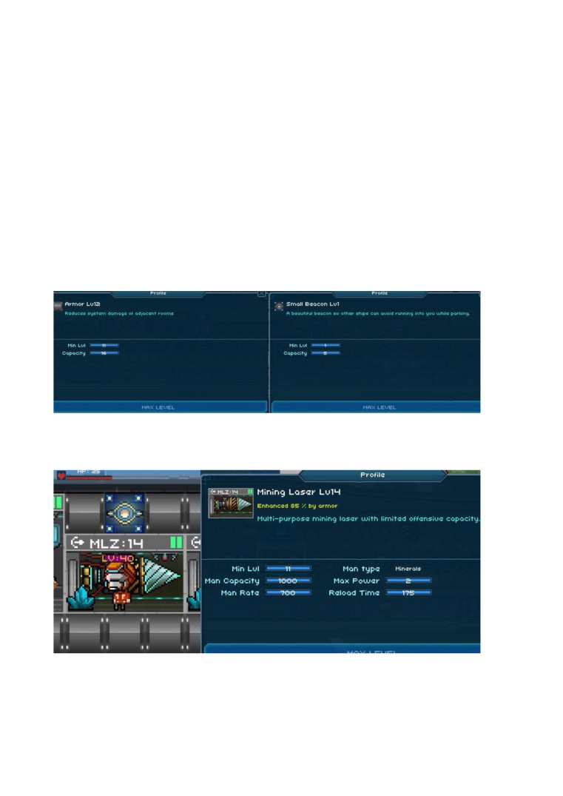
AI 202: (room assist)
PSS works with several formulas which allow crew and other items to ‘buff’ individual rooms. I call
this ‘room assist.’
Let’s break them up into 3 categories:
Armor, modules and crew stats
ARMOR:
● Armor reduces both system damage AND hull damage taken when an adjacent room is hit
by any destructive force. This includes shots from lasers, missiles, laser-based drones, and
cannons.
● It also reduces the system damage inflicted by BOTH fire damage and enemy boarders.
● It does not reduce character damage taken by crew inside the room in any way.
● It does not reduce the effects or duration of emp.
● It does not affect the duration of fire damage.
Here is the profile page of an armor block beside the profile page of a beacon:
‘Capacity’ is the relevant stat here. So, as you can see, that armor block provides 16 points of
assistance and the beacon provides 5 points.
Here’s what it looks like when applied to a room:
The room is enhanced by 5 armor blocks and 1 beacon. (5*16)+(1*5)=85
The yellow line of text on the profile page indicates that same value.
However, this seems to suggest that this room takes only 15% of damage from enemy fire. This is
not the case. In fact, it’s possible to armor most rooms above 100%, so we need to know the
formula savy used to calculate the damage…
and here it is:
1/(1+enhancement)
For the above example, that means 1/1.85 = ~54%
Any system or hull damage scored on this room does so at 54% of its base value.
Lastly, think back to the earlier lesson where we learned that bedrooms have an internal defense
rating of 300.
This means they take damage according to this formula:
1/(1+3) = ¼ = 25%
Like I said, it won’t do you much good.
MODULES:
● Modules are relatively new to the game and more are certain to be released in the future.
● Currently, there are only two types that assist a room:
○ HP
■ Sandbags, bricks, concrete blocks, steel barriers
■ These absorb the initial damage aimed at a room, before the room hp is
touched.
■ Once destroyed, the enemy scores system damage.
■ Once the system is destroyed, the enemy scores hull damage.
■ HP items do not absorb direct hull damage from Penetrator missiles nor
emp effects.
■ HP items are single use, meaning lost after they’re destroyed.
○ Fire
■ Sprinklers assist the repair crew in dealing with fire by reducing the duration
of the fire.
■ They do not put fires out by themselves.
■ Fortunately, they are indestructible and will always remain in the room
unless manually moved or removed.
CREW STATS:
Crew have two sets of stats. For the purpose of this document, I’m calling them left-side stats and
right-side stats.
(Left-side stats will be explained in greater detail in AI 301, as they pertain more to crew ai)
Right-side stats include:
● Pilot
● Shield
● Engine
● Weapon
● And a hidden (dead) stat called Research
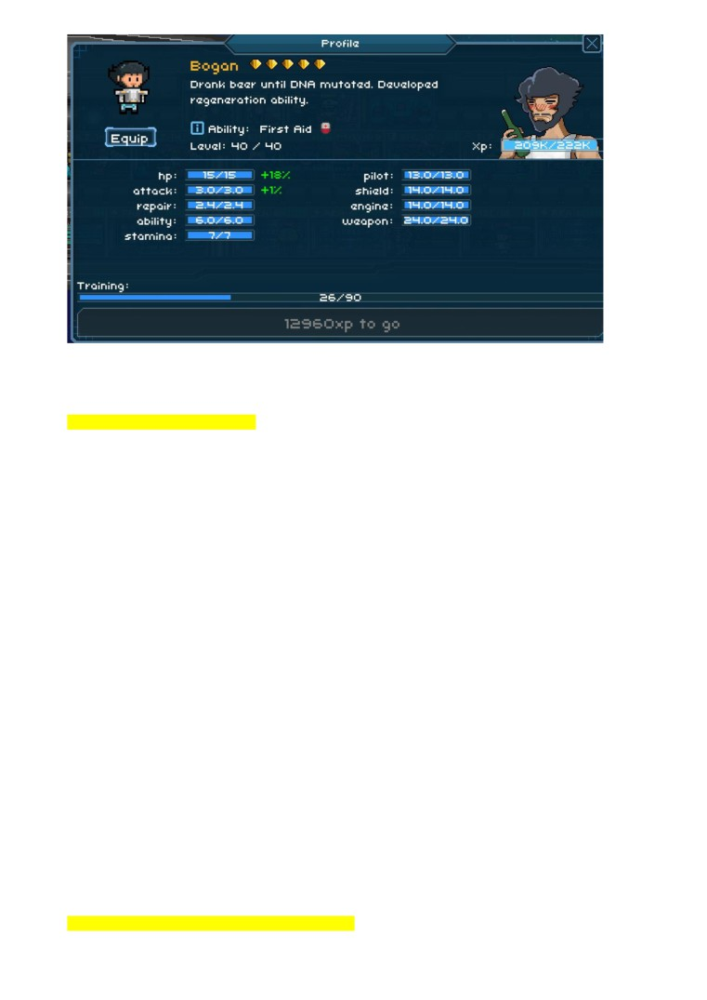
Pilot, shield and weapon all work the same way in reducing the cooldown of a room. They all use
the same formula.
The cooldown formula:
1/(1+(combined stat points/100))
It’s easiest to think of the stat points as percentage points. Add up the weapon points of the crew
standing in a laser. Let’s say, for example, you get a total of 35.
1/(1+(35/100))
1/(1+0.35)
1/1.35
~74%
That 74% is applied to the reload time of the room. If you look back to the laser profile page above,
you’ll see the reload rate is listed as 175.
That means every 175 frames, the laser fires. Remember, the game presents 40 frames per
second. Therefore, unassisted, that laser would fire once every 4.25 seconds.
If we put our 35 weapon points in that room, it’s reduced to 74% like this:
175*0.74 = 129.5
Now the laser fires once every 129.5 frames (just over 3 seconds)
The same mechanics work for pilot and shield stats because the corresponding rooms also work
on the same cooldown (reload) mechanic.
Engine stat works differently because the room does not operate on a cooldown. It is constantly
on, and passive.
The constant formula:
Capacity of room + (capacity * (sum of stats/100))
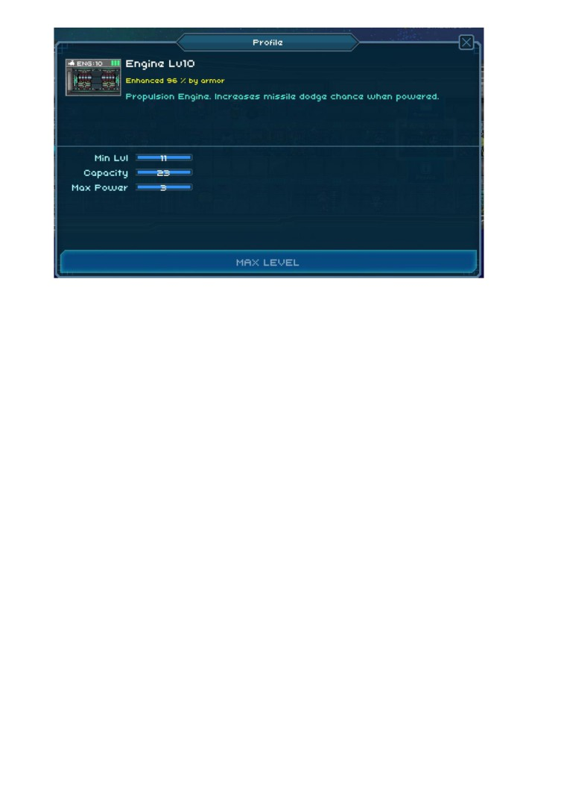
The capacity of this engine is 23. That means that, unmanned, it gives you a 23% chance of
dodging a missile.
If you add crew to assist the room, again, add up their stats… this time engine stats. Let’s say you
get a total of 28.
23 + (23*(28/100))
23 + (23*0.28)
23 + 6.44
29.44
You now have a 29.44% chance of dodging a projectile.
Also, multiple engine rooms stack. Weapons work independently but engines add together. If you
had two, unmanned engines like the one above, you’d have a 46% chance of dodging a projectile.
Projectiles include:
● All missile types
● Firehawk bolts
● Corsair bolts
● CML canisters
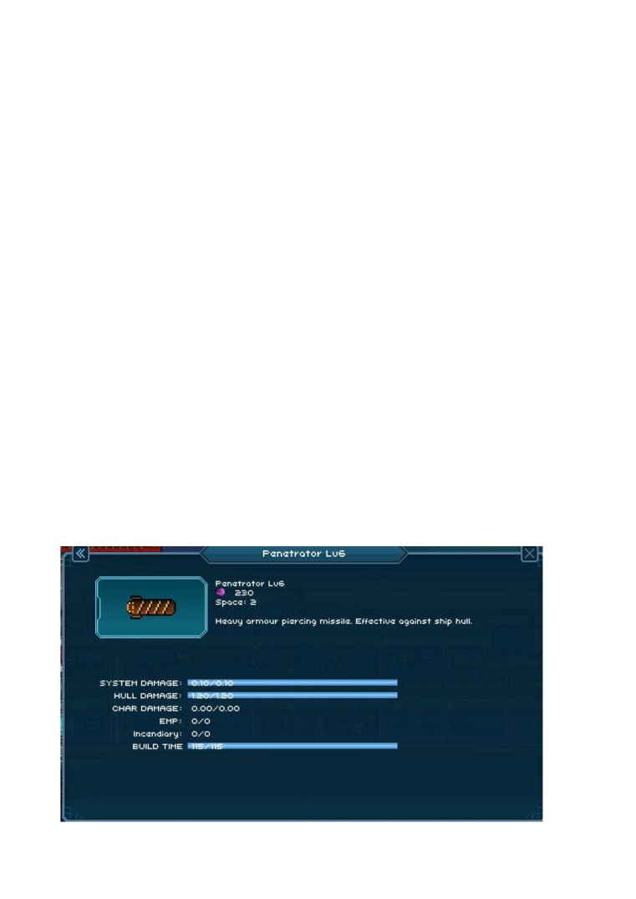
AI 203: (weapon targeting)
The goal of these guides is to get your ai doing most of the work for you. Ideally, you’ll end up
playing hands-free like many top captains do already.
In order to do that, you need to get things working efficiently.
It’s best to remind ourselves that matches are won by destroying the enemy hull. You can try to do
this quickly or slowly, but the first ship to destroy the other’s hull wins the match. As of this writing,
matches are 3:00 long, so don’t choose a strategy which takes too long to develop.
Hull damage occurs in only 3 ways:
● Landing a CML canister (on defense).
● Landing a Penetrator missile on any room.
● Landing system damage from weapons on a room which has been destroyed.
The first is out of our control. You can’t aim it and it either hits or misses. If it does hit, it causes a
small percentage of hull damage based on remaining hull hp.
Penetrator (Pen) missiles:
● These missiles do direct hull damage based on their base hull damage stat and the armor
enhancement value of the target room.
● To increase the base hull damage stat of Pens, research them further in the lab.
● No modules can help to mitigate Pen damage.
● Defensive options against Pens include:
○ Engines
○ Armor
○ Disrupt enemy MSL room(s)
● If using them offensively, aim for targets that often have minimal armor. Reactors are a
popular choice.
● Pens do cause a minimal amount of system damage as well, but are not likely to ever
destroy a room on their own.
To get MSL room ai shooting pens, you need at least 3 commands:
1. none: set max power/ increase by 1
2. none: set highest hull damage/ cheapest/ dearest
3. Targeting command
‘Set max power’ and ‘Increase Power by 1’ actions essentially do the same thing, but can be used
in advanced tactics. For more about this see AI 401.
The second ai line in this example is what chooses the type of missile. If you make and carry more
than one type, you can set them for different situations by making multiple conditions with different
‘set’ actions.
Set cheapest/dearest actions use production cost as the determiner.
I left the third line (and subsequent lines) open-ended. This is because you can decide and modify
where/when to shoot your Pens if you decide to use them. You’ll have a better idea how to do that
after the next section. For now, let’s just use this:
3. none: Target enemy reactors
Hull damage with lasers:
● Hull damage is scored with lasers only when they continue to shoot a room that is totally
destroyed.
● Targetable rooms have hp. It is equal to exactly how much power they can consume (TT:1,
MSL:3, ION:6), so it’s easy to keep track of during battle.
● Enemy repair crew slow this down. If the target room is being repaired, your lasers will be
battling against the repair crew to keep the room destroyed long enough to score hull
damage.
● The natural game mechanics also cause a problem for scoring hull damage with lasers. It
wants you to progress to another room and destroy a new target.
● To stop your ai from retargeting a new room, you need to use Conditions which make
finding a new target impossible. This concept has several names, but I call it Focus Fire.
Focus Fire:
Your ship has full shield: target enemy lasers
As long as you have a shield room (which is not busy upgrading) on your ship, you will start every
match with a full shield.
Then, both ships start shooting at each other and the shields are never full again.
This means that your retargeting command is never true again and you weapon keeps shooting at
the same place.
You told it to shoot at an enemy laser, it picked one and later your shield wasn’t full anymore, so it
can’t pick another one.
You now have focus fire on that enemy laser room.
There are other conditions which can create a target lock on a room, but this is the simplest and
easiest to achieve at all levels. However, from now on I’ll refer to these as focus fire conditions.
Here are some things that would cause this not to work:
● Your shield room is upgrading or not on your ship
● The enemy has no laser room
● The enemy never shoots your shield
● You have other targeting commands with different conditions
And solutions to the above:
● You could use enemy shield conditions if yours is offline.
● You can use multiple lines with the same condition but different targets.
Your full shield: enemy lasers
Your full shield: enemy missiles
Your full shield: enemy teleport
Etc.
● If the enemy doesn’t shoot your shield and you are still losing, manually target a room and
find a fix for next time.
● Delete the other commands
Scarlet Missiles:
● While scarlet missiles themselves cause no hull damage, they can be extremely effective in
allowing your lasers to do more hull damage.
● Remember, crew action cycles have a hierarchy.
a. Fight present enemy
b. Extinguish fire
c. Repair system damage
d. Assist room
● They cannot repair the room if it is on fire. Therefore, when a room is destroyed and
burning, all laser hits to that room score direct hull damage, even when repair crew is
present.
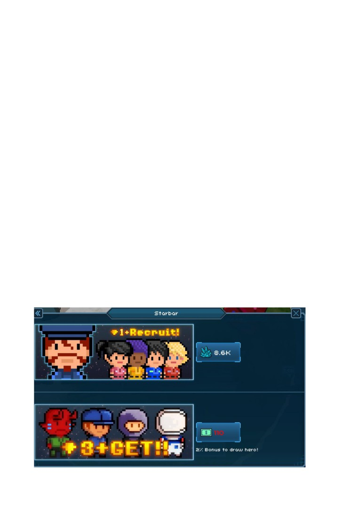
AI 301: (introduction to crew)
Crew and ai are equally important elements of this game. You could have the best crew in the
game and still be terrible due to a lack of ai. Conversely, you could have the best ai and still be
awful due to bad crew.
You need both. Unfortunately, crew can’t be given like ai advice. We can only learn what to look
for.
Often, I’m asked what I think the best crew character in the game is. My answer is always, “there
isn’t one.”
Certainly, some crew are useful in more ways than others, but most players cannot afford to hand-
pick an entire ship’s-worth of crew. You need to learn to make the best use out of the crew you
have.
That being said, some crew characters are worth keeping but many are not. You will need crew
diversity, but diversity within a very small set of ‘acceptable’ characters.
Before you toss anyone out the airlock, let’s understand crew thoroughly.
RARITY:
1. Common (1 gem, gray)
2. Elite (2 gem, white)
3. Unique (3 gem, blue)
4. Epic (4 gem, purple)
5. Hero (5 gem, yellow)
6. Special (1 shield, light yellow)
7. Legendary (1 eagle, yellow)
1-5 can be drafted from the crew tab in the store.
Mineral recruitment will give you a random crew with a rarity of 1-3.
Starbux recruitment will give you a random crew with a rarity of 3-5.
The mineral recruitment price increases by 50% for each crew of any rarity already owned.
The starbux recruitment price increases by 10% for each Epic/Hero you already own.
To keep the costs down, fire unwanted crew by dragging them into space while in idle mode.
ALL common and elite crew should be considered immediately ‘unwanted’ and fired.
Special crew cannot be drafted and cannot be prestiged. They are either won or purchased.
Legendary crew cannot be drafted. They are only available through the prestige process.
Crew is also available for purchase on the daily dropships and occasionally in the shop. If you’re
unsure about the value of a crew for sale, ask in global chat before you buy.
ABILITIES:
All crew rarity 3 and higher have a special ability which they can begin to use at (crew) level 10.
They can be used only once a fight.
There are 11 special abilities:
1. Critical Strike (crit): applies value as damage to one enemy in same room
2. Poison Gas (gas): applies value as damage to all enemies in same room
3. First Aid (self heal): applies value to personal hp
4. Healing Rain: applies value to all friendly characters’ hp in same room
5. Freeze: freezes one enemy for duration of value
6. Firewalk: applies value as fire damage to current room (always active)
7. Arson: applies value as fire damage to current room
8. System Hack (hack): applies emp to current room for value duration
9. Ultra Dismantle (dismantle): applies value as system damage
10. Urgent Repair: applies value as system repair
11. Rush Command: applies value as a percent cooldown of current room load rate
Numbers 1-6 can be used anywhere
Numbers 7-9 can be used only on the enemy ship
Number 10-11 can only be used on your ship
For information about how to code crew ai to use special abilities, see AI 302
SENIORITY:
It’s not evident at first, but the game assigns your crew members seniority based on when they
enter the game.
This affects where they stand in a crowded room and who goes first when multiple crew should
respond to the same ai prompt.
Your captain will always be the most senior member of your crew. If you still use him/her, (s)he will
be the first one to go do a multiply-assigned task. He will also always stand to the far left of a room.
Seniority cannot be changed or coded, but it can be manipulated. For more on this, see AI 303
STATS:
When you have a crew that you’re happy with (at least for the time being) take a look at it’s stats
and decide how you want to use it.
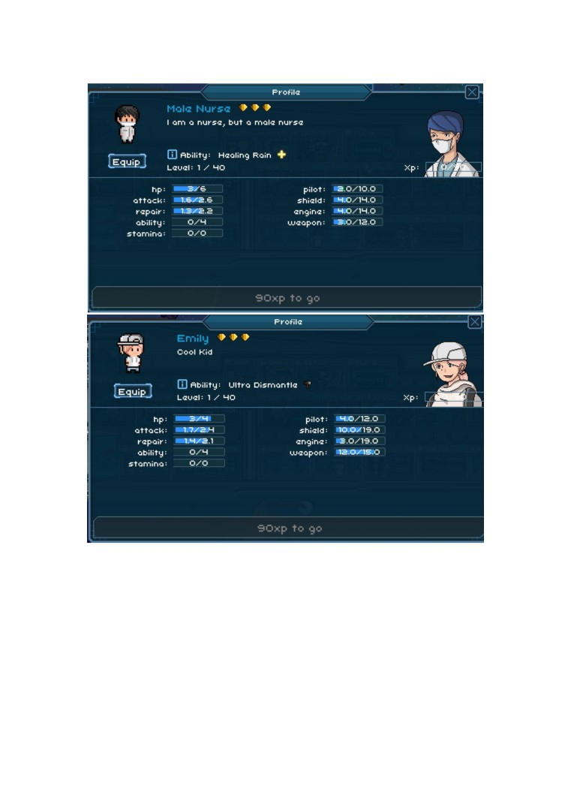
In many cases, the ability and left-side stats are good places to start.
Here are two potential crew:
The nurse would make a better repair crew as he will have a longer life and his repair stat is better.
Emily would make a better weapon crew as she come with 12 weapon points at level 1 and will
never have much hp.
Some players use all crew to do the same jobs. They all start somewhere and eventually end up
repairing. I call this ‘repair to the last man,’ and I HIGHLY recommend that you avoid this strategy
and instead give each crew specific tasks.
We will look at more specific ‘tasks’ or roles crew can play AND how to choose which crew does
which task in AI 302
AI 302: (tasks & abilities)
As stated before, assigning specialized tasks to crew can add up to one, very efficient ship.
Let’s look at the possible categories:
● Rush command*
● Room assist
● Repair
● Boarding
● Anti-Boarding
Those are our basic choices. And they all overlap.
It’s important to note that crew automatically do most of those tasks when in the appropriate room.
The only thing we need to ‘tell’ them to do is go to that room AND use an ability, if appropriate.
RUSH COMMAND:
● This task can only be accomplished by crew with the rush command ability. It is very
powerful, so you should take care to never end a fight without using all your rushes.
● For AI purposes, all abilities work independent of movement actions, in the same way that
power commands for a room don’t interfere with targeting.
● However, the crew using the ability DOES need to have a place reserved in the room
where he wants to use his ability.
[What does this mean?]
[It means that the crew cannot simply walk through a room and snap off his ability as he is passing
through… he needs to either be standing, or walking to his reserved destination in the ‘target’
room]
Some examples:
(Xin starts in the teleport)
None: ability
Any your room<100: Target condition
None: your engine
If you’re trying to get him to rush the teleport, this won’t work. He has no line tying him to the
teleport and will start walking to the engine immediately. When he arrives at the engine, he will use
his rush, which shouldn’t be allowed because engine does not use a cooldown formula.
To get him to rush the teleport before he heads off to his post at the engine, we need to add a line.
(Xin starts in the teleport)
None: ability
Your full shield: your tele
Any your room<100: Target condition
None: your engine
How about starting him somewhere else and having him use his ability as soon as he arrives? No
problem:
(Xin starts in a nearby laser)
None: ability
Any your room<100: Target condition
Your ship <100: your engine
None: your tele
In this example, the first actionable line is #4.
#1 runs independent.
#2 and #3 haven’t happened yet
How about getting him to use his rush later?
No problem, we just need to find a more suitable ‘trigger’ condition, and make sure he is where we
want him to be when that trigger goes off.
(Xin starts in the emp cannon)
Enemy no shield: ability
Your ship >50: your cannon
Any your room<100: Target condition
None: your engine
● In all the examples, there’s a repair command and a ‘home’ room (engines). They’re just
examples. I personally don’t like to have my rush guys repairing at all because it
complicates seniority which we can learn more about in AI 303. You can play with your own
rush guys and find the best ‘secondary’ task for them to suit your own strategy.
● Whatever you determine it to be, after using the ability, we need to find a different task or
two for the rush crew to do.
● Lastly, rush stacks but does not roll-over. That means that 100% rush is possible for instant
firing of any weapon. This most likely will take you more than one crew to achieve (though,
with the right equipment it is possible with just one) BUT two xins which add up to 120 rush
do not charge the second shot 20%
ROOM ASSIST:
● Not much to add here. We’ve already learned that the crew do this automatically and the
formulas for how each stat assists each room.
● Think of it as the crew manning their battlestations.
● Choose crew with high weapon stats to dedicate to your weapons.
● Personally, I do not give them any repair commands. I want them firing weapons only.
● I do give these guys ‘escape’ commands which move them out of harm’s way if their ‘home’
room is the enemy target.
Example:
Appropriate ability command*
Current hp <50: your laser
Current hp <100: your missile
None: your laser
I don’t want my guys standing in a room under fire. They start in a laser. Any damage to their hp
sends them to a missile room. Any further damage sends them back to a laser.
What if the missile room is full?
No problem. Give them another option:
Appropriate ability command*
Current hp <50: your laser
Current hp <100: your missile
Current hp <100: your cannon
None: your laser
Again, all of these locations are just examples. Find what works best for your crew. If they’re hurt,
maybe the best option is to have them board the enemy ship. Only you will know how to best use
your crew.
REPAIR:
● Repair is such a huge topic that it needs its own page. You can find the bulk of repair
advice in AI 303.
● It is important to know that you need to dedicate a significant portion of your crew, if not a
majority of it to repair.
● The best repair crew are ones with high hp. Crew with First Aid and Healing Rain special
abilities are also ideal repair crew.
● Crew with the special ability Urgent Repair are ironically seldom used. If you do have one
and want to use it, code the ability ai as follows: none: ability at the top of their ai set.
BOARDING:
● Boarding is another topic which deserves its own page. You can find the bulk of boarding
advice in AI 304.
● The most commonly used boarders are crew with Poison Gas and Critical Strike special
abilities.
● Ultra Dismantle and System Hack are also viable options for boarders, though used less
frequently.
● You’ll want your boarders to do as much damage as possible, so consider their attack stats
as well.
ANTI-BOARDING:
●
Anti-boarding refers to dealing with enemy crew aboard your ship.
●
One option is to cut them off at the source and disrupt the enemy teleport room. This likely
won’t stop everyone and applies more to room targeting anyway. So we need options to
deal with the enemies that do make it onto our ship.
●
Here are several options:
○ Python 3 ‘crit defenders’
■ Python 3 research opens up an ideal condition for dealing with enemy
boarders. Use it with a crew which has a Critical Strike or Poison Gas ability
like this:
None: ability
Friendly room has enemy: target condition room
If you have not yet researched Python 3, you’ll have to resort to something
else below.
○ Security gate
■ Security gate is just a room. It does not need to be told when to hit enemies.
It only needs a power command, and will hit an enemy if/when it can.
■ Security gates seem weak, but do come with an internal defense rating of 50
and can be repaired.
○ Gunner gates
■ Crew with crit or gas abilities can also hit enemies that pass through a room
which they are assisting. To get them to do this simply run none: special at
the top of their ai command set.
○ Reactor patrol
■ Reactors are likely landing zones for boarders. It’s possible to station crew in
each reactor, anticipating boarders for part of, or the entire duration of a
battle.
■ Another option would be to make crit crew repair your reactors first and hope
that system damage to a reactor means an enemy boarder is present. You
would do this with the following command set:
None: ability
Your reactor<100: target condition room
○ Defender droids
■ These work automatically and use the preprogrammed py3 command set:
listed above.
○ Room type rush
■ You could send multiple crew into all reactors and fight it out with attack
stats. To do this, you would code all crew close to each reactor with the
following:
Appropriate ability command
Your reactor<100: your reactor
Your reactor<50: target condition
None: ‘home’ room
ABILITIES:
Abilities are (mostly) very useful tools that can be used during battle. Some are more useful than
others. And there will be times when you feel like some are useless. Try to think of more novel
ways to get the ones you have to work for you.
In the meantime, I will list them all with the trigger command most often used for each.
1. Critical Strike (crit): none:ability
2. Poison Gas (gas): none:ability
3. First Aid (self heal): current hp<25: ability
4. Healing Rain: current hp<25: ability
5. Freeze: none:ability
6. Firewalk: N/A
7. Arson: none:ability
8. System Hack (hack): none:ability
9. Ultra Dismantle (dismantle): none:ability
10. Urgent Repair: none:ability
11. Rush Command: (situational) none:ability
To keep things consistent, always run the ability trigger as the first line of any crew’s code.
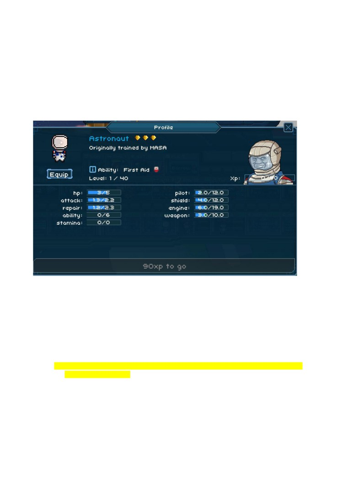
AI 303: (repair & seniority)
Repair ai is the most important part of the game. You can win with bad targeting ai. You can win
without any boarding ai at all. But you will always lose with bad repair ai.
Repair ai has two objectives:
● Keep systems operating.
● Stop/slow hull damage from happening.
Let’s choose an example crew and start with repair commands in their simplest form.
Your any room<100: target condition room
With this command, astronaut will go to the first room that takes any system damage.
If the first damage occurs in your shield room, astronaut will go there.
Remember, crew action cycles have a hierarchy, so:
● Astronaut must first walk to his spot.
● Once there, he fights any enemy crew present. The picture shows level 1 astronaut. Each
action cycle, he does 1.3 (attack) damage to an enemy in the room.
● Next, he extinguishes any fire in the room.
The relevant stat for extinguishing fire is Repair. The extinguish cycle uses this formula:
●
((Repair*100)/40)/2
●
If you do the math, astronaut would reduce the duration of the fire by 1.5 seconds
each cycle.
● Then, he starts to repair the system damage of the shield room at a rate of 1.2 hp per cycle.
● Finally, once the room is repaired to 100% hp he is freed of this condition as it relates to the
shield room.
At this point he either stays and assists the shield room or heads off to another damaged room.
● If the enemy is only shooting your shield, astronaut will stay here repairing when the room
is <100, and assisting shield cooldown when it’s full health.
● If the enemy is shooting multiple rooms, he will head to the second room to have taken
damage.
You will likely find that this isn’t the best way to repair because your crew does not have enough hp
to ‘tank’ the damage inflicted by the enemy.
Even if we assign the same command to multiple crew, we end up watching our repair guys pile
into a room and dying together in a short time. We need a way to extend their lives.
REPAIR DODGE & ‘HOME’ ROOMS:
The first trick in extending the life of a repair crew is to get him dodging enemy shots.
Assume the enemy is shooting all or most of its weapons at one room. We want our astronaut to fix
the room and get out of there until it needs fixing again. Else he takes hp damage at the same time
as the room is taking system damage. We need to add a ‘home’ room.
Your any room<100: target condition room
None: target your lasers
Now, when he finishes repairing the shield, he heads out to the nearest laser (his home room).
More shots land and damage the shield again, so he goes back to fix it.
BUT he wasn’t in the room when those shots landed so he didn’t lose the hp.
Be careful! Our astronaut’s home room is a laser. So, if the enemy target is a laser he cannot
dodge anything. He will stand there and repair to death.
Therefore, we will need more repair crew with diverse ‘home’ rooms.
Here’s a bigger example with 4 repair crew:
1.
(Male Nurse starts in shield)
Your any room<100: target condition
None: your shield
2.
(Astronaut starts in missile)
Your any room<100: target condition
None: your missile
3.
(Dennis starts in a laser)
Your any room<100: target condition
None: your laser
4.
(Vivien starts in AA)
Your any room<100: target condition
None: your AA
Before we see how this would work, we need to talk about seniority.
● SENIORITY:
○ Crew aboard your ship are assigned an order of who goes first, based on when they
entered the game.
○ It can be discovered:
■ For android users, the crew line up at the end of any pvp battle (oldest to
newest)
■ For iOS users, the crew line up before any pve ground mission (oldest to
newest)
○ The oldest crew go first.
○ Let’s return to the example knowing this and using the 1-4 order provided as our
seniority.
Again, let’s say the enemy is shooting only at the shield.
● Shield room has room for 3 crew but (1. Male Nurse) is already there, so two vacancies.
● As soon as the shield takes system damage, the two most senior responders head for
those vacancies. (Since our nurse is #1, that means 2. Astronaut and 3. Dennis start
walking)
●
1. Male Nurse will probably repair the room before either can arrive, but he is trapped in the
shield and will repair to death.
● When 1. Male Nurse dies, system damage to the shield starts to build up again, and with
him gone there are 3 vacancies in the shield room.
● Now, 2. Astronaut, 3. Dennis and 4. Vivien make their way toward the shield.
● As they arrive, they walk to their assigned spot (left 2, center 3, right 4) and begin to repair
the room.
[if 4. Vivien is the first to arrive, she still walks to the far right spot before doing anything]
● When the room is totally repaired again, they all head back to their ‘home’ rooms until more
damage happens.
Seniority can cause lots of problems with repair ai, and we can’t do anything to change the
seniority of our crew.
Many players throw an any your room<100 repair prompt on every single one of their crew. The
crew rush in to fill the room with repair cycles, but the damaged room fills up with dead bodies. And
unless you have a massive hp based crew, this is really inefficient. Also, I told you it’s best to give
your crew specific tasks… many which include no repair task at all so we need a workaround.
Luckily, we can manipulate seniority by telling our crew when to react to system damage.
Manipulating seniority: First, DON’T use the any your room <100 condition.
For crew(s) you want to act first
List the commands separately like this:
Your laser <100: target condition
Your missile <100: target condition
Your engine <100: target condition
Your shield <100: target condition
Etc.
For crew(s) you want to act second
List commands separately but use <50 in each condition instead of <100.
For crew(s) you want to act much later (third and fourth), use a hold command
● A hold command is a command which keeps the crew doing a different task for the first part
of battle.
● Your ship >50 is an ideal hold command condition for repair.
● It means that until your ship hp is >50, this guy will stay in his home room assisting the
cooldown.
So the third string repair crew get this:
Your ship >50: Target your (homeroom*)
Your laser <100: target condition
Your missile <100: target condition
Your engine <100: target condition
Your shield <100: target condition
Etc.
And finally, the fourth string repairers get the same as the above, but use <50 prompts instead of
<100
Python 3 and repair (advanced tactic):
Once you research python 3 commands, some new (very useful) conditions become available.
Target room has friendly is the one that best fits normal repair ai. It can be used as a hold
command if you want to avoid multiple crew in the same room.
However, python 3 commands have many issues. I suggest you read on before incorporating any
py3 commands into your repair programming.
Target Adjacent (advanced tactic):
If you find that your peers have a significant Rate of Fire (ROF) you may need to send crew not
only to the room taking damage, but also to the neighboring rooms. This would allow for many
crew to have quick access to the room under heavy fire.
As soon as one repair guy dies, the next hops in from the neighboring room.
To do this, use something like this set:
Your AA<100: target condition
Your AA<100: target AA
Your AA<100: target (neighboring room type*)
AI 304: (boarding)
Boarding can be one of the deadliest tactics in the game. It can also be one of the most frustrating
when it comes to optimizing ai for it.
Let’s look at three main categories:
Teleport defense, boarder destination, and tele rush:
TELEPORT DEFENSE:
Anyone who’s ever used a teleport before knows that it’s a likely target.
If it figures to be an integral part of your ship design, you’ll need a way to protect it. Here are
several ways to do that:
●
Critter defense
○ Place a crit defender in the teleport with a hold command keeping him there for the
desired duration
None: ability
(Anti-boarding commands*)
(Repair/Boarding commands*)
Your ship <100: ‘home’ room
○ Warning- Having this crew occupy space inside the teleport often makes multi-rush
difficult and can also cause room seniority issues
●
Delay tele:
○ This is a bit outdated now, but in the past it was common for enemies to rush-send
a hack crew to your teleport, rendering it useless for the beginning of a battle.
○ By starting the fight with no power in teleport, the hack doesn’t work and defending
crew kill the would-be hacker.
○ Power is restored shortly after the opening shots with a shield condition.
●
Modules
○ Although expensive and non-reusable, tele could be protected by placing modules
there.
○ Landmines do 8hp damage and c4 does 11hp.
○ Warning- this is a poor choice because these modules inflict damage to everyone
in the room.
●
Dummy teleport
○ Some players use teleport as a decoy. That is to say, they never power it and send
no boarders.
○ This can be very effective with heavy armor and good repair ai.
BOARDER DESTINATION:
Before abilities, boarding was simple. We didn’t even have emp in those days. It was a straight up
hp contest, and usually the guy with the deepest pockets won.
It can still feel like that sometimes now, but luckily for most non-millionaires, there are many
strategies almost anyone can achieve.
[In this section, I want to focus on the boarders themselves… not the rush command involved in
getting them there quickly.]
● Basic teleportation
○ The teleport room itself is easiest to understand if you think of it like a door.
○ It’s a ‘special’ door and behaves almost exactly like the elevator queue.
○ Guys line up on the ‘pad’ (center B position), and they are no longer considered ‘in’
the room.
○ They are susceptible to modules, abilities and weapon fire from the enemy ship, but
cannot be located or attacked by any enemy crew present.
○ On the other side of the door is the target location specified by each member’s
targeting action. Your boarder is not considered ‘in’ that room yet either.
○ You can’t choose exactly which room your destination will be with ai. You can only
choose what kind of room it will be. Room selection works the same way as weapon
targeting.
○ When the crew arrives at his destination on the enemy ship he has a 0.5sec
cooldown before he can do anything (including use ability)
○ Under normal targeting commands, the boarder destroys the target room and then
walks (on the enemy ship) to the next closest target allowed by your targeting
commands.
○ If he were later told to return to your engine room, he would go back through that
‘special door’ and walk from your teleport room to the nearest engine.
●
Camping
○ Boarder camping works the same way as focus fire room targeting.
○ The effect is that the boarder goes to his destination, destroys the room and then
sits there, or ‘camps’ out and waits for enemies to fight.
○ However, you need to remember that rooms have a limited number of crew
positions. (AA:2, HAN:5, etc.) and this creates necessary consequences:
■ With weapons, we can shoot the same room without limitation. We could be
shooting 16 weapons at a turret if we had them. But we can only send two
boarders there at a time.
■ This can cause problems on the ‘pad’ if you send many boarders to the
same location type because of seniority. We need an example:
●
[example]
(We want to send 7 boarders to camp enemy reactors, each with the same command set)
None: ability
(Focus fire condition*): target enemy reactors
■ At the beginning of the match, all seven of these crew start walking to the
‘pad’
■ The ‘special door’ opens to the first enemy reactor and waits for boarder
seniority #’s 1-3 (if its an REA) to fill the first destination room.
■ However, if boarder #4 is on the pad and ready to go, he has to wait until
1,2,3 arrive and beam over. This may be a while if the early guys are walking
from a distant location in your ship.
■ This is only a problem because they all share exactly the same command. I
call it a boarder command seniority conflict. To solve it, use different focus
fire conditions or different target locations.
[For advanced tactics in boarding, see AI 501]
TELE RUSH:
The teleport room is 3*2 so it has three crew positions.
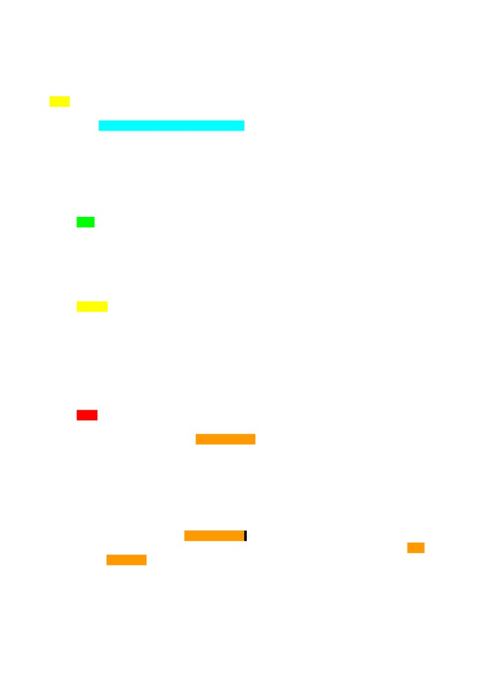
Let’s call them: A, B and C.
Walking through a room does not take a position, and neither does standing on the ‘pad.’ So the
boarders themselves never take up any of the positions, leaving us 3 spots to conduct both rush
and defensive/repair actions.
[Note- boarders who start in the tele do so in order of their ‘room seniority.’ Room seniority is the
order of the 2-3 guys in the room, whereas ‘ship seniority’ would mean order of the entire crew. If
there are no boarder command seniority conflicts, the boarder who starts in position B will leave
first, followed by crew in the order that they arrive at the ‘pad’ (tele B)]
The amount of rush you can apply and how many boarders it can affect will be different for
everyone. It is impossible for me to write out every scenario. Instead, I’ll write as if each rush crew
has 100% ability, and then you can modify everything to fit your crew’s capabilities (make it work).
If you need two crew to achieve 100%, just remember that they need two of the A,B,C positions.
●
First wave:
○ Rush crew start in tele
○ Leave ASAP
○ None: ability
Full shield: your teleport
(Repair commands*)
None: ‘home’ room
●
Second wave:
○ Rush crew start near tele
○ Go there immediately
○ Leave shortly after
○ None: ability
Active shield: your teleport
(Repair commands*)
None: ‘home’ room
○
[It’s possible to send two with this command set]
●
Third wave:
○ Rush crew start outside tele
○ Go there after a short hold command on either movement and/or ability use.
○ Here, things can vary wildly. So, let’s look at options:
■ Ability use:
● None: ability [if the crew starts in a room in which rush command
cannot be applied (REA, non-targetable room)] OR
● No active shield: ability OR
● Ship <100: ability
■ Movement:
● Any hold command which allows space in your tele to open up.
○ To get these guys out of the teleport, you need to use a longer, secondary hold
command on their time in the teleport and assign a ‘home’ room.
[example:]
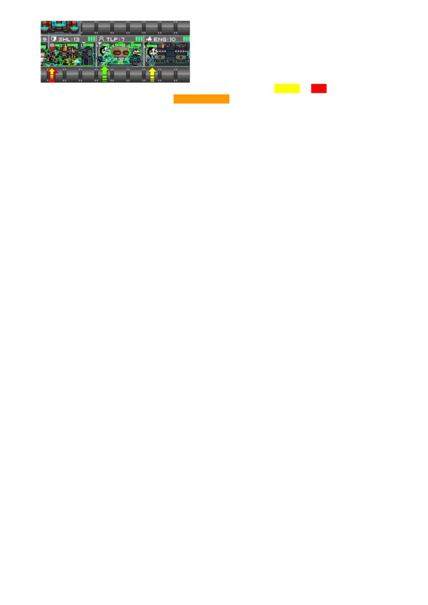
The subject in question is this Paralympic God. He can be either a second or third wave rusher. It
all depends on whether there are any hold commands on Brenda or Wolfie at the beginning of the
fight.
● Other variables:
○ Distance from teleport
○ Walk speed to teleport
○ Python 3 ‘crew in room’ conditions
AI 401: (power management)
Directing the desired amount of power to the proper systems should be the job of ai at all ship
levels.
Early game power management is relatively easy to master, but worth reviewing.
In late/end game, you’ll likely need to revisit power management tactics and find ways to operate
smoothly and consistently while running well over your power supply.
So let’s divide this section accordingly:
Basic power management:
● Because the commands loop, ‘set max power’ and ‘increase by 1’ work almost exactly the
same way.
● The only difference is that ‘max/min’ are instant and ‘increase/decrease’ execute slightly
more slowly.
● Power is supplied to rooms in order of room seniority. This is assigned when the room is
first built.
● If you use the same power commands for all rooms, The oldest rooms get the power first.
● If the power commands are all the same, power is distributed as evenly as possible.
[example 1]
If you have two engines and one MLZ, they call for 8 total power.
If you only produce 7, it will be allocated one at a time until there is not enough.
[in this example, ENGa was built before ENGb]
ENGa: 1, ENGb:1, MLZ:1
ENGa: 2, ENGb:2, MLZ:2
ENGa: 3
[example 2]
You have one ENG, one MSL and one ION
All set to ‘max power’
You produce 10 power
Room seniority is ENG, MSL, ION
ENG:1, MSL:1, ION:1
ENG:2, MSL:2, ION:2
ENG:3, MSL:3, ION:3
ION:4
If you want to tell the ION to fill up, and leave the ENG underpowered, you leave MSL and ION at
‘set max,’ but change the ENG Power command to ‘increase by 1’
ENG:1, MSL:1, ION:1
MSL:2, ION:2
MSL:3, ION:3
ION:4
ION:5
ION:6
Power missing from any room reduces the cooldown rate (or capacity for engines) by the
percentage of power missing.
That means that an MLZ14, which normally shoots at an unassisted rate of once every 175 frames,
would only shoot once every 350 frames if given one less power.
Advanced power commands:
There’s nothing really advanced about any power commands. It’s more just an advanced
understanding of when and where to withhold power.
Here are some techniques:
● AA not needed when no drones
○ This might seem obvious, and you could set it to only power when an enemy has a
hangar present.
○ But, some enemies don’t power hangar when AA is present.
○ I solve this like this:
■
1. Enemy drones >0: max
2. No active shield: min
3. Enemy hangar >0: max
4. None: min
● Hangar not needed after drones out
○ This also limits the amount of drones you could possibly lose in a battle.
○ Cut power after your ship <100/50
● Engines not needed if no missiles
○ This is not entirely true as engines also dodge select drone projectiles (firehawks
and corsairs)
○ But engine power can almost always be safely cut if the enemy doesn’t have
missiles.
● Shield is never needed
○ See AI 501 for more details.
Another technique I like to use is something I call ‘power soak’
● Power soak is the concept of a power-hungry systems absorbing bars from damaged
systems.
● I start my ION with 1-3 bars.
● As other systems take damage, the power is freed and soaked up into the ION.
● This makes undamaged systems work better, and essentially cuts power to rooms taking
heavy fire.
Finally, use your knowledge of power allocation to try to ‘trap’ enemy power.
● Emp effect on a system has two consequences.
a. Stops the reload from advancing
b. Locks the power (it cannot be adjusted, even manually)
AI 501: (advanced tactics)
By the time you reach end-game ‘supership’ level, you need to have mastered all of the common ai
tactics.
You should be able to easily adjust your ai settings without fear of messing something up and
being unable to fix it.
AFTER you unlock Python 3 research (lab8, ship9) you will be capable of some very advanced
tactics. More are still being discovered, and I’ll try to keep this list updated if/when they become
viable strategies.
Before we get to the examples, it’s important to examine py3 commands.
●
7 new conditions (room hp, room status)
○ Target room <100
○ Target <= 0
○ Friendly room has enemy
○ Target has friendly
○ Target has no friendly
○ Target has enemy
○ Target has no enemy
●
1 new action:
○ Continue job
1.
The first two new conditions are similar enough to the old ones, so need no real
explanation.
2.
The new category (which I’m calling ‘room status’) are a whole new concept. They do not
allow you to do an action, but rather allow you to modify an action currently being
executed.
3.
They make sense if you think of them as meaning “except when…”
4.
Remember, PSS ai works in a top-down manner, so order of these commands is important.
5.
Let’s do a fake example first:
○ Bear in room: run to bathroom
Tired: sit in chair
None: go to kitchen
6.
Normally, we just go to the kitchen. If we’re tired we sit. Except, if there’s a bear in the
room, all that gets thrown out the window and we run to the bathroom.
7.
We have no intention of running. Our goal is to go to the kitchen. But bears are bad for our
strategy, so we modify the plan if one shows up.
8.
Let’s see what happens if we just use the python command by itself:
○ Bear in room: run to bathroom
9.
Well, we’re not in any room yet, so it can only send us to a bathroom… one which may
contain a bear.
[Note- many players make the mistake of thinking that this will send us to a ‘bearless’ bathroom.
This is wrong. It will send us to a random bathroom which might contain a bear. Our contingency
plan, if there is a bear in the room, is to target a bathroom, but we are in a bathroom, so we’re
stuck dealing with this bear.]
[Note2- sometimes, crew get caught in a loop with python 3 commands when two commands are
both ‘untrue’ at the same time. They bounce back and forth (both unexecutable). This causes your
crew to have seizures on the screen. I call it ‘dancing.’]
● Continue job:
● This action gives us the ability to maintain our current task. It basically tells our ai to ‘never
mind the following conditions… do not deviate’
● Fake example :
○ Naked woman in room: continue
Wife talking to you: pay attention
● This tells us that if our wife is talking, we pay attention to her. If a naked woman enters the
room… we pay attention to our wife.
● It allows another condition to be true which still compels us to keep doing the same thing.
Anyway, on to the examples. Not all advanced tactics require python 3, but test (and re-test) the
ones that do to make sure they work properly.
We’ve already learned about multi-rush, multi-camping, and advanced power settings. I would
classify these as advanced tactics because of the level of ai understanding needed to set them up
efficiently.
But here’s a list of some other, very deadly advanced tactics:
Python 2.0 required:
●
Bouncy laser:
○ What it does:
■ This maximizes the random retargeting any weapon room shoots at.
○ How it works:
■
1. (Power command*)
2. (Ammo select*)
3-15. (All your room types) <50: Target (desired*) enemy room type
16. Your any room <100: Target enemy random
17. None: target (desired*) enemy room type
○ Why it’s effective:
■ Disrupts more enemy rooms and crew.
■ Depleted enemy repair crew stamina.
●
Tailback (dismantle/hack):
○ What it does:
■ Guarantees a successful dismantle/hack on an enemy room.
○ How it works:
■ A. Multi-rush your teleport
B. First boarder is hp tank
C. Second boarder is (desired*) effect
○ Why it’s effective:
■ Mutes enemy crit defense in target location.
■ Dismantling the shield room instantly removes any shield protecting the
enemy.
●
Emp racing:
○ What it does:
■ Guarantees you land the first emp cannon shot
○ How it works:
■ Heavy weapon stat crew in both mlz. (No travel time)
■ Instant-rush ION
■ Delayed rush in EMP:
■
1. Enemy ship no shield: ability
2. (Hold command*) in your EMP
3. (Repair/boarding commands*)
4. (‘Home’ room*)
○ Why it’s effective:
■ This can be coupled with some other advanced tactics to lock down both
enemy cannons for the entire battle.
●
Target adjacent:
○ What it does:
■ Concentrates repair crew in the area nearby the enemy focus fire target.
○ How it works:
■ Set multiple destinations for the same damaged room condition.
■
1. Your AA<100: TCR
2. Your AA<100: your AA
3. Your AA<100: your (adjacent*) room type
○ Why it’s effective:
■ This allows crew to cycle in and repair much more immediately.
●
Suicide squad:
○ What it does:
■ Blitz massive early battle hull damage to enemy ship.
○ How it works:
■ Send boarders to your focus fire target room.
○ Why it’s effective:
■ Enemy repair crew must first fight your boarders before they can repair.
■ Once there, all the crew in the room (including your suicide boarders) take
not only enemy atk damage, but also your weapons’ character damage.
■ Weapons simultaneously land system/hull damage while chewing through
enemy repair crew faster.
●
Hollow shield:
○ What it does:
■ Frees up some power
■ Creates another focus fire condition
○ How it works:
■
(Shield) none: set min power
○ Why it’s effective:
■ Your ship still begins every match with a full shield. It just never regenerates
any bars.
●
Second focus:
○ What it does:
■ Creates a focus fire target later than the opening sequence of battle.
○ How it works:
■ Your active shield: target enemy (focus fire*) OR
■ Your ship >50: target enemy (focus fire*)
○ Why it’s effective:
■ Allows you to disrupt multiple enemy rooms/crew.
■ Deplete enemy stamina.
■ Finish doing focus fire hull damage.
Python 3.0 required:
● Full heal:
○ What it does:
■ Heals your crew to 100% hp
○ How it works:
■
1. (Ability command*)
2. Current hp<25: your medical
3. Current hp<100: continue job
4. (Task commands*)
○ Why it’s effective:
■ Allows crew extended life and multiple attempts at accomplishing his
mission.
●
Boarder ghosts:
○ What it does:
■ Boarders avoid resolving combat with enemy crew.
■ Boarders avoid abilities of enemy crew
○ How it works:
■
1. None: ability
2. (Escape command*) [see AI 302]
3. Target room has enemy: your teleport
4. (Optional) target room =0: your teleport
4/5+. (Boarding commands*)
○ Why it’s effective:
■ Once they arrive in an empty room, boarders will never be touched by
defending crew.
●
Micro delay:
○ What it does:
■ Allows two or more weapons to target two different enemy rooms of the
same type.
○ How it works:
■ You need to designate an ‘off room’. This room should be one which you
never actually intend to target.
■ You MUST ensure that none of your boarders ever enter this ‘off room’.
■ Your weapon1:
1. (Power command*)
2. (Ammo select*)
3. (Normal/focus fire target ‘desired room type’ commands*)
■ Your weapon2:
1. (Power command*)
2. (Ammo select*)
3. Target room has no friendly: target ‘desired room type’
4. None: target enemy ‘off room’
○ Why it’s effective:
■ It can be used to target both cannons, both missiles, both AA, or two
different reactors.
■ Mostly effective with emp or pens.
● Python abilities:
○ What it does:
■ Defeats ‘defender first’ ability priority.
○ How it works:
■ Normally, the crew with a standing position in a room (on either ship) has
‘defender’ status. When an enemy crew enters the room, the defender acts
first. This includes abilities.
■ Python commands on the crew entering the room defeat this mechanic. Now
he fires first on the ‘defender.’
■
1. Target room has enemy: ability AND/OR
2. Friendly room has enemy: TCR
○ Why it’s effective:
■ Makes crit defending easier
● Python repair:
○ What it does:
■ Puts hold commands on all but one repair crew at a time.
○ How it works:
■
1. (Ability command*)
2. Target room has friendly: continue job
3. (Repair commands*)
4. ‘Home’ room
○ Why it’s effective:
■ This makes it so that only one guy repairs at a time.
■ Sometimes that is not ideal, but it can be useful, especially if you intend on
running minimal repair tasked crew.
AI 502: (behind the scenes)
In this final section, I’ll discuss hidden mechanics employed by the game.
Keep in mind I cannot read the actual code. All of my knowledge comes from either direct
explanation from the dev team or experience as a player.
There are many things I don’t know about the game, and many things, here, that I hope to
eventually learn. I’m not the only one who knows how the game works either, and I encourage
anyone with more insight to write follow-up articles to better describe what is listed below. Until
then, here’s what we are working with:
1.
The robot problem:
a.
The Android Studio room ‘creates’ three different types of droids, each designed to
perform a specific task. However, all 3 types suffer from problems connected to their
uneditable ai coding and often seniority issues as well. Let’s look at their coding:
b.
Boarder droid:
■ None: ability
None: target enemy random
■ This isn’t terrible, but you can’t aim them. They could all arrive in an enemy
security gate or in your focus fire target room.
c.
Service droid:
■ None: ability
Any your room<100: TCR
■ The big problem here is seniority. Since they are created each battle, they
will always have the least ‘ship seniority’ and will often do nothing because
multiple repair crew you use are already responding to system damage.
d.
Defender droid:
■ None: ability
Friendly room has enemy: TCR
■ These suffer the same seniority problem as service droids. They’re always
the newest and allow other crew with the same commands to go first.
2.
RNG:
a.
The game uses a Random Number Generation mechanic to resolve many ‘chance’
encounters (missile dodge, escape, target section, etc.)
b.
The RNG is not as ‘random’ as you might think.
c.
It likely uses frames, like most of their formulas, but there aren’t randomly assigned
values to those frames.
d.
Double inbound missiles almost always hit/hit or miss/miss. This indicates that the
rng mechanic lumps the values together.
e.
If you have a 60% dodge chance and think of the rng as a giant wheel with 40
spokes, they don’t appear randomly at all, but rather the first 60% (24) spokes are
‘miss’ and the following 40% (16) are ‘hit.’
3.
Cannon targeting:
a. If both you and the enemy use the same targeting command (full shield: target
enemy cannon), you will be targeting the same weapon.
b. You cannot choose whether that is ion or emp, but you both shoot at the same one,
every time.
c. This means that if you both use this targeting command in your emp cannon ai, you
either both cancel each others’ ion OR The first to shoot will cancel the other’s emp
cannon.
4.
Replays vs. simulations:
a. Replays often show inaccurate results.
b. This is because replays do not show what happened during the fight. They show a
simulation of what happened.
c. They record the manual changes that occurred during the battle and show a
simulation of the battle using AI + any manual changes.
d. Remember, the AI selects randomly. So, what you see it select during a replay and
what it actually selected during the battle may be completely different. Try watching
the same replay multiple times. You’ll see what I mean.
5.
Beer draw:
a. The drop rate for a unique/epic/hero crew in the beer draw follows a RNG formula
that I’ve never bothered to ask for. (*If someone knows the formula, or feels like
requesting it from savy, feel free to edit this section or message me and I can do it)
b. Nonetheless, for every unique or epic you pull, the formula is adjusted by a +2%
Hero chance.
c. Also, for each hero or epic you obtain, the price of the next pull is increased by 10%
6.
Drop rate:
a. The drop rate for items in any ‘gift’ circumstance likely follows a RNG formula similar
to the crew recruitment algorithm.
b. All common and elite items have a hidden stat called ‘drop rate’ which can be
looked up at orions.boards.net
7.
Crew training:
a. Crew training in either the gym or the academy uses another RNG formula.
b. It has been suggested by the dev team that the upper limit training programs (12hr)
have a greater chance to yield better results, and that is consistent with my own,
personal findings.
c. Like all PSS mechanics there’s an upper limit of diminishing returns. Achieving
higher than 50% training in any one stat is extremely difficult.
8.
Fire damage:
a. Fire damage follows a complex formula that I don’t fully understand. However, I do
know that it does not employ any RNG mechanic and that the damage caused to
crew is heavier upon first impact and dissipates over time.
b. Fire duration (expressed in seconds) can be calculated by the following formula:
Incendiary/40
Final note- ALL things contained within this and related articles are subject to change.
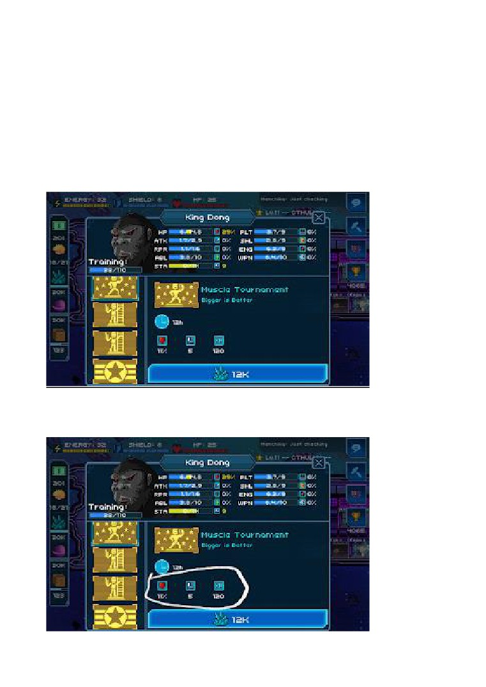
Gym & Academy
Training Crew
Gym and academy training can seem confusing but once you know how it works it really is quite
simple. A few common questions are “does it matter when i train?” and “what should i train my
crew in?”. The first question is easy. The answer is no it doesn't matter when you train as training
increases both your current score in any given attribute and the maximum score in any given
attribute and continues to add the gains to any points gained via leveling your crew. The second
question depends on what role your crew is taking. Repair tanks, boarders and boarder defenders
you generally would train hp and ability in the gym. Crew specialised as say weapon crew you
would try to train primarily the weapon skill in the academy and so on.
How the gym and academy work
This is the gym console. The top panel shows your crew picture and (current training points
spent/max available points) on the left then all your current crews stats on the right. Under the top
panel you have a training regimen selection panel on the left and then a detailed description of the
selected regimen on the right.
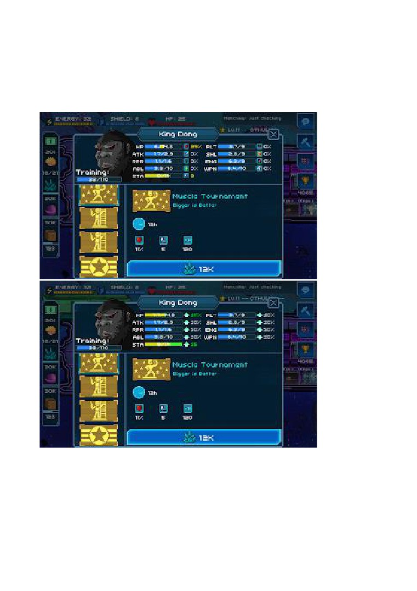
The gym and academy work off percentages. In the above picture the circled area has the potential
gains of the currently selected regimen and above that is the training time for that regimen.
Remember crew can still be used in battle while training so try to keep your gym connected.
The picture shows that the selected regimen will give up to 11% in hp training and 5 in stamina
with a little xp on the side. It is possible to get nothing from training so what we get is anywhere
from 0% - 11% hp and 0 - 5 stamina. Each 1% in any stat or point in stamina takes up 1 training
point. If you get no gains you use none of your training points.
In the two pictures above we will be looking at the top panel. The console will toggle the top panel
between the formats in both pictures. In the top picture the stats panel shows the current
distribution of training points. This king dong has spent 38 of a maximum of 110 training points. 29
points went into hp represented by the 29% next to the hp bar and 9 points into stamina. This
means his hp has been increased by 29% and he keeps that bonus as he levels. What this means
is a crew with 2/10 hp with 50% training in hp now has 3/15 hp with the 3 as current hp and the 15
as hp at level 40.
The bottom picture represents the maximum possible gains from the currently selected regimen.
Notice the less or equal sign next to hp and stamina with there potential gains next to them. Look
at the differences in the stat bars between the two pictures and notice the bottom one has higher
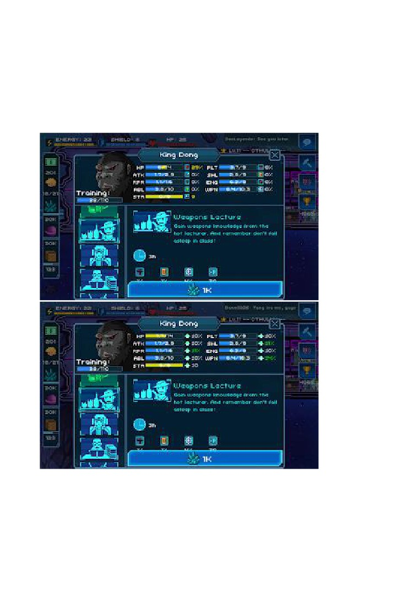
numbers. Those higher numbers are what those stats will be if you are lucky enough to get
maximum training eg. 11% on hp.
When choosing a training regimen the idea is to choose the one with the biggest gap between
potential gains for the stat you want to increase and the other stats increases. You want the
highest chance possible for your target stat and the lowest possible chance to waste training points
in stats you don't want to increase. If you want to train hp and only hp then the above pictures
show 11 potential points spent in a wanted place and potentially 5 points wasted. In the lower hp
training regimen it has 8% hp and i think 5 stamina. The hp gains vs potential waste is more risky
hence why the 11% hp training is better for your crew, it has a lower ratio of possible wasted points
to possible gains.
This is the academy. It works the same way as the gym but it’s for the stats on the right like
weapon and engine.
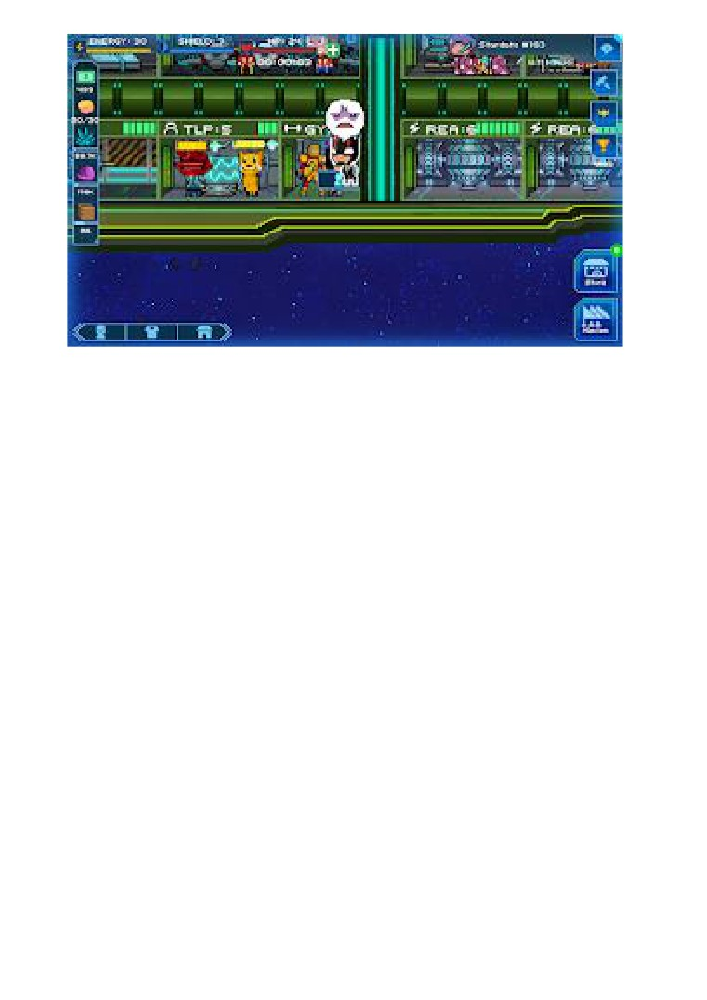
In the above picture you will notice a crew in the gym with a grumpy face speech bubble above
him. That speech bubble means the crew is tired from training and that training him further while
he's tired will give diminished returns. Just wait for the bubble to disappear and then you can train
him again with no problems.
As a final note i will point out that the more you train a stat the more it diminishes returns. Training
any stat over 50% is hard and can take a long time. Generally once you train a stat to 50% - 55%
you would move on to the next relevant stat. King dong you would train hp as high as possible then
once he stops gaining you would swap to ability and make his first aid stronger.
Acknoledgments
I personally feel that knowledge acquired through personal experience and casual conversations
with peers about the mechanics and functional use of AI in PSS belongs in the public domain.
That being said, I’d like to acknowledge several people who have helped a great deal in the
accumulation of knowledge within this article. These include but are not limited to:
● Bombing Away
● Chigs
● DrRockIt
● ImpactWinter
● One Three Tombo
● Quansei
● WhiteWorf
● Zensi
Also, a very special thank you to both Xin and Vincent from the SavySoda development team for
answering countless questions and granting permission to make that information publicly available.